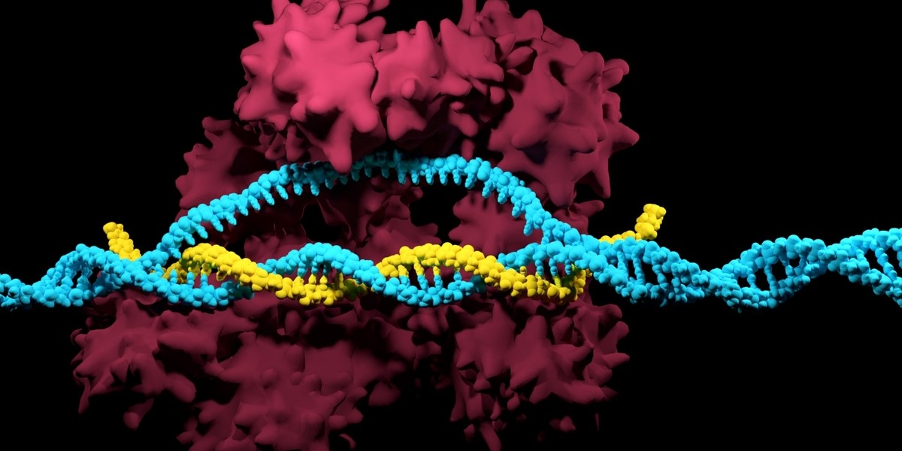
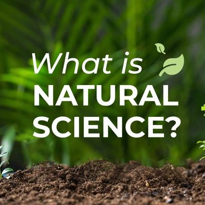

In the realm of quantum physics, there exists a phenomenon that challenges our classical understanding of the universe - Quantum Entanglement. This mysterious connection between particles, regardless of the distance that separates them, has intrigued scientists and philosophers alike for decades. In this blog post, we will embark on a journey into the fascinating world of quantum entanglement, unraveling its intricacies and exploring its potential implications for the future of science.
Nov 23, 2023
CRISPR-Cas9: A Revolutionary Gene Editing Tool Transforming the Landscape of Biology

In the ever-evolving landscape of biological research, one groundbreaking technology has taken center stage - CRISPR-Cas9. This revolutionary gene-editing tool has not only transformed the way scientists approach genetic manipulation but has also opened up new possibilities for addressing previously incurable diseases. In this blog post, we delve into the intricacies of CRISPR-Cas9, exploring its mechanisms, applications, and the ethical considerations that come with wielding such unprecedented power over the building blocks of life.
Nov 23, 2023
What Is Natural Science?

Natural science is one of the branches of science concerned with the description, understanding and prediction of natural phenomena, based on empirical evidence from observation and experimentation.[1] Mechanisms such as peer review and repeatability of findings are used to try to ensure the validity of scientific advances.
Nov 23, 2023
What Is Natural Science?
Natural science is one of the branches of science concerned with the description, understanding and prediction of natural phenomena, based on empirical evidence from observation and experimentation.[1] Mechanisms such as peer review and repeatability of findings are used to try to ensure the validity of scientific advances.